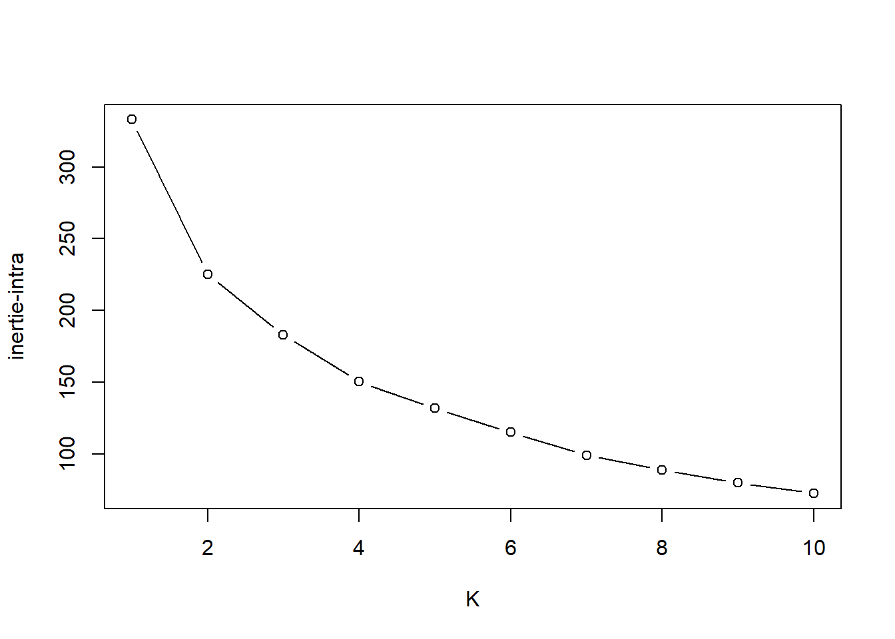
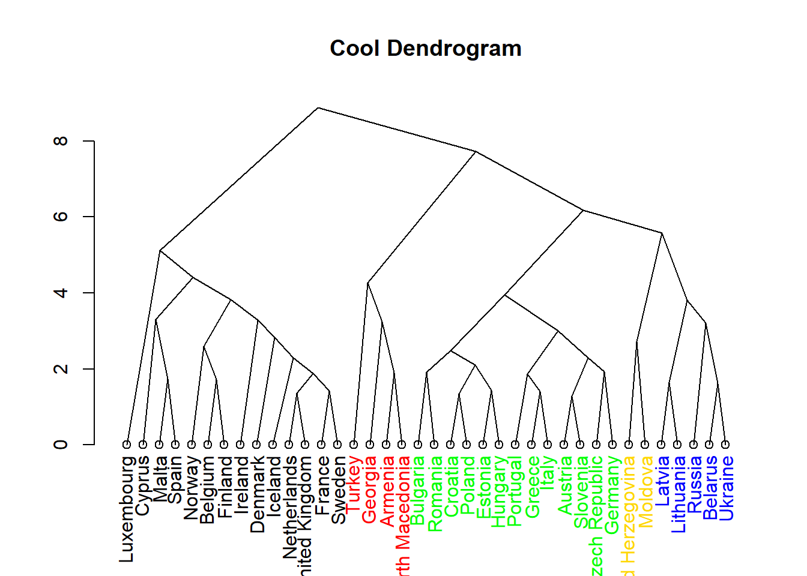
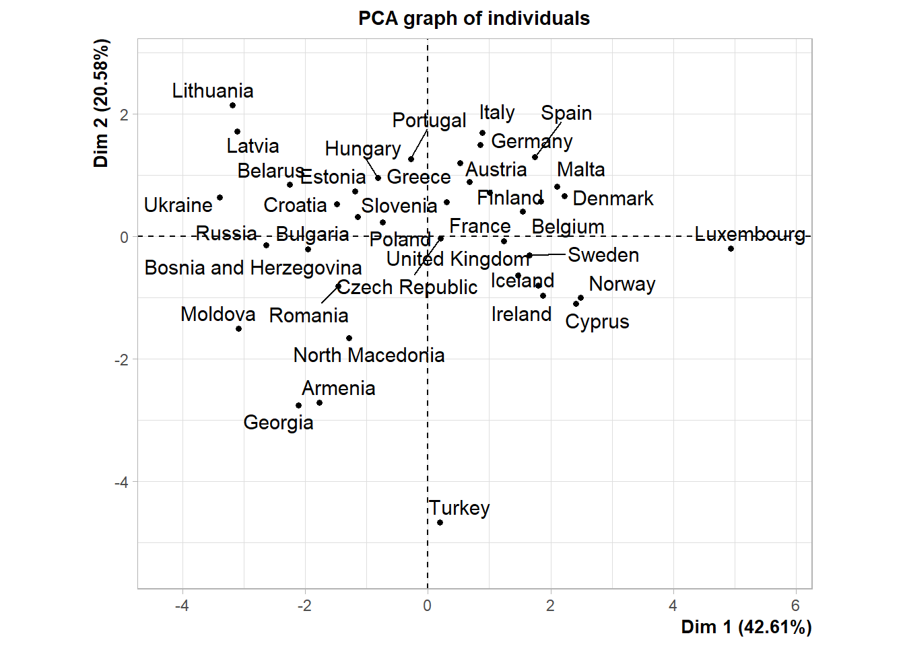
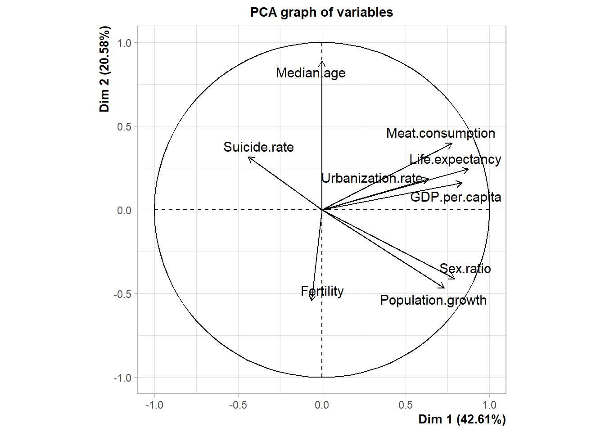
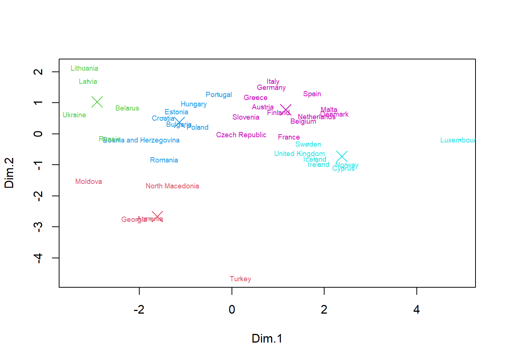
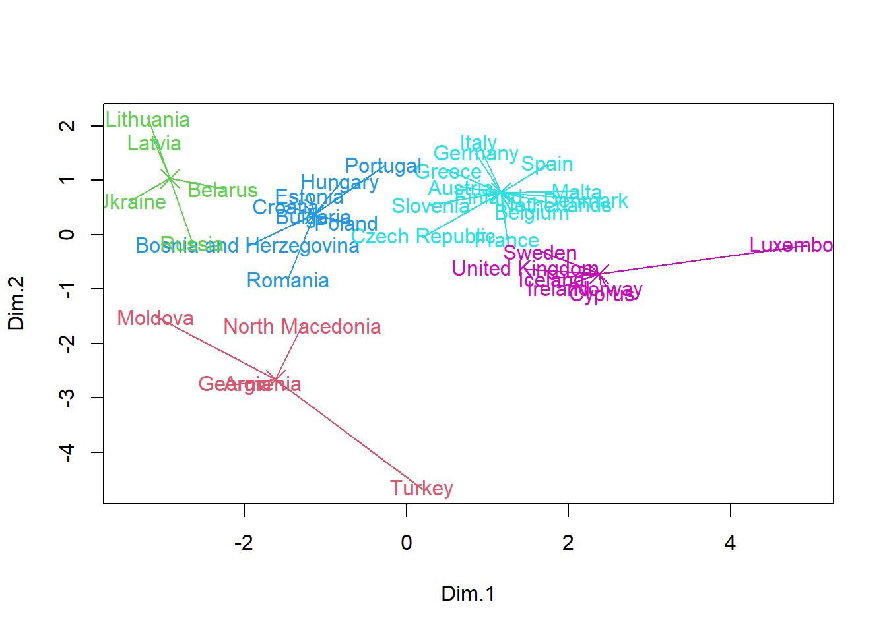

set.seed(123)
data<-read.csv2("C:/Users/guill/OneDrive/Documents/Charles_University/Multivariate analysis/Europe.csv",sep=";",header = TRUE,row.names = 1,dec=",")
library(FactoMineR)## Warning: le package 'FactoMineR' a été compilé avec la version R 4.1.3How many groups to form ?
data_scale <- scale(data)
Kmax <- 10
resKmeans <- list()
criterion <- rep(NA, Kmax)
for (K in 1:Kmax){
resKmeans[[K]] <- kmeans(data_scale, K, nstart = 50)
criterion[K] <- resKmeans[[K]]$tot.withinss
}
plot(1:Kmax, criterion, type="b", xlab="K", ylab="inertie-intra") 5 groups will be formed
Cluster Dendrogram
D <- dist(data_scale) ### for the euclidian distance by default
HC1 <- hclust(D)
cutHC1 = cutree(HC1, 5)
labelColors = c("red", "green", "blue","black","gold")
# function to get color labels
colLab <- function(n) {
if (is.leaf(n)) {
a <- attributes(n)
labCol <- labelColors[cutHC1[which(names(cutHC1) == a$label)]]
attr(n, "nodePar") <- c(a$nodePar, lab.col = labCol)
}
n
}
# using dendrapply
clusDendro = dendrapply(as.dendrogram(HC1), colLab)
plot(clusDendro, main = "Cool Dendrogram", type = "triangle")
res.pca <- PCA(data_scale,scale.unit = TRUE, graph = TRUE)## Warning: ggrepel: 1 unlabeled data points (too many overlaps). Consider
## increasing max.overlaps
round(resKmeans[[6]]$centers,2)## Fertility GDP.per.capita Life.expectancy Meat.consumption Median.age
## 1 -0.21 -0.12 0.21 0.22 0.79
## 2 -0.16 -0.67 -1.41 -0.80 0.18
## 3 0.05 0.51 0.86 0.62 0.11
## 4 1.92 -1.08 -0.96 -1.51 -1.98
## 5 -0.25 1.85 0.79 1.14 -0.92
## 6 -0.48 -1.11 -1.08 -1.23 -0.47
## Population.growth Sex.ratio Suicide.rate Urbanization.rate
## 1 -0.36 -0.28 -0.19 -0.36
## 2 -1.17 -1.83 1.99 -0.07
## 3 0.38 0.61 -0.13 1.16
## 4 0.67 0.11 -0.89 -0.50
## 5 1.52 1.35 -0.43 0.24
## 6 -0.45 0.16 -0.52 -1.58explication of each groups :
table_of_link<-data.frame(matrix(NA,5,9))
colnames(table_of_link)<-colnames(data_scale)
row.names(table_of_link)<-c("Group_1","Group_2","Group_3","Group_4","Group_5")for(i in 1:5){
for(j in 1:9){
test<-t.test(data_scale[,j]~(resKmeans[[6]]$cluster==i))
table_of_link[i,j]<-round(test$p.value,3)
}
}
table_of_link## Fertility GDP.per.capita Life.expectancy Meat.consumption Median.age
## Group_1 0.273 0.523 0.308 0.219 0.000
## Group_2 0.693 0.027 0.000 0.000 0.559
## Group_3 0.864 0.004 0.000 0.009 0.601
## Group_4 0.035 0.021 0.098 0.000 0.078
## Group_5 0.633 0.052 0.000 0.099 0.008
## Population.growth Sex.ratio Suicide.rate Urbanization.rate
## Group_1 0.051 0.162 0.347 0.066
## Group_2 0.073 0.000 0.002 0.747
## Group_3 0.033 0.001 0.545 0.000
## Group_4 0.247 0.839 0.000 0.282
## Group_5 0.077 0.000 0.204 0.633$ Group 1 :$
names(which(resKmeans[[6]]$cluster==1))## [1] "Austria" "Bulgaria" "Croatia" "Czech Republic"
## [5] "Estonia" "Germany" "Greece" "Hungary"
## [9] "Italy" "Poland" "Portugal" "Slovenia"round(resKmeans[[6]]$centers[1,which(table_of_link[1,]<0.075)],2)## Median.age Population.growth Urbanization.rate
## 0.79 -0.36 -0.36This is a group of countries with a significantly low average median age. These countries tend to have a low population increase compared to the other. In addition, the rate of humanisation of these countries is small.
$ Group 2 :$
names(which(resKmeans[[6]]$cluster==2))## [1] "Belarus" "Latvia" "Lithuania" "Russia" "Ukraine"round(resKmeans[[6]]$centers[2,which(table_of_link[2,]<0.075)],2)## GDP.per.capita Life.expectancy Meat.consumption Population.growth
## -0.67 -1.41 -0.80 -1.17
## Sex.ratio Suicide.rate
## -1.83 1.99This group is made up of eastern countries that were part of the former USSR. These are countries with a lower than average GDP, life expectancy and meat consumption. The population is also growing very little. The number of women is proportionally higher. In addition, the suicide rate is significantly higher than in the other groups.
$ Group 3 :$
names(which(resKmeans[[6]]$cluster==3))## [1] "Belgium" "Denmark" "Finland" "France"
## [5] "Iceland" "Malta" "Netherlands" "Spain"
## [9] "Sweden" "United Kingdom"round(resKmeans[[6]]$centers[3,which(table_of_link[3,]<0.075)],2)## GDP.per.capita Life.expectancy Meat.consumption Population.growth
## 0.51 0.86 0.62 0.38
## Sex.ratio Urbanization.rate
## 0.61 1.16This group seems to be the opposite of the previous group. GDP is higher than average (although Malta should bring the average down). Life expectancy is high, as is meat consumption and urbanisation. The population tends to grow more than in other countries. In addition, the male/female ratio is high.
$ Group 4 :$
names(which(resKmeans[[6]]$cluster==4))## [1] "Armenia" "Georgia" "Turkey"round(resKmeans[[6]]$centers[4,which(table_of_link[4,]<0.075)],2)## Fertility GDP.per.capita Meat.consumption Suicide.rate
## 1.92 -1.08 -1.51 -0.89This group consists of only three countries, all of which are in southern Eastern Europe (see Asia). These are countries with a high fertility rate. This is representative of a low GDP. Meat consumption is very low, as is suicide rate.
$ Group 5 :$
names(which(resKmeans[[6]]$cluster==5))## [1] "Cyprus" "Ireland" "Luxembourg" "Norway"round(resKmeans[[6]]$centers[5,which(table_of_link[5,]<0.075)],2)## GDP.per.capita Life.expectancy Median.age Sex.ratio
## 1.85 0.79 -0.92 1.35The latter group seems to be the richest. Life expectancy is higher than in other countries. In addition, the population is very young and predominantly male. They may be young Europeans who have migrated to these countries for their advantages in the world of work.
PCA for visualisation.
res <- PCA(data,scale.unit = TRUE, graph = FALSE)
subset<-res$ind$coord[,1:2]grpMeat<- kmeans(subset, center=5, nstart=50)
plot(subset,pch=19,col=5,cex=0.2)
text(subset,labels=rownames(data), col=grpMeat$cluster+1,cex=0.6)
means<-grpMeat$centers
points(means,col=c(2,3,4,5,6),cex=2,pch=4)
We notice that the groups formed are no longer the same with this method
grpMeat<- kmeans(subset, center=5, nstart=10)
plot(subset,pch=19,col=5,cex=0.2)
text(subset,labels=rownames(data), col=grpMeat$cluster+1)
means<-grpMeat$centers
points(means,col=c(2,3,4,5,6),cex=2,pch=4)
for(i in (1:nrow(data))){
if (grpMeat$cluster[i]==1){
lines(c(subset[i,1],means[1,1]), c(subset[i,2],means[1,2]),col=2)
}
if (grpMeat$cluster[i]==2){
lines(c(subset[i,1],means[2,1]), c(subset[i,2],means[2,2]),col=3)
}
if (grpMeat$cluster[i]==3){
lines(c(subset[i,1],means[3,1]), c(subset[i,2],means[3,2]),col=4)
}
if (grpMeat$cluster[i]==4){
lines(c(subset[i,1],means[4,1]), c(subset[i,2],means[4,2]),col=5)
}
if (grpMeat$cluster[i]==5){
lines(c(subset[i,1],means[5,1]), c(subset[i,2],means[5,2]),col=6)
}
}